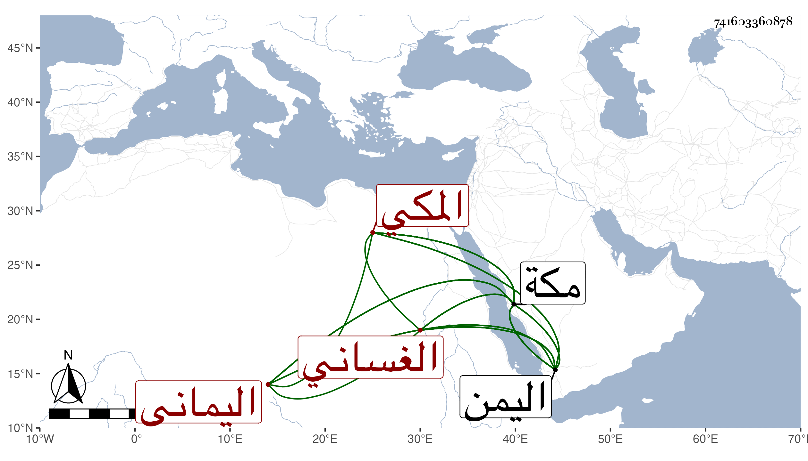

0902Sakhawi.DawLamic.ITO20230111-ara1.EIS1600.741603360878
Biography ID: 741603360878
949
يحيى بن أحمد بن يحيى بن إسماعيل بن العباس بن علي بن داود بن يوسف ابن عمر بن علي بن يوسف محيي الدين بن الشهابي بن الظاهر بن الأشرف هزبر الدين الغساني اليماني الأصل المكي ختن قاضي الحنفية بمكة الجمال أبي النجا محمد ابن الضياء الماضي ووالد عمر وإسمعيل المذكورين ويعرف بابن ملك اليمن . اشتغل قليلا وقرأ على البدر بن الغرز حين مجاورته بمكة الرسالة القشيرية واستقر في مشيخة الزمامية بمكة برغبة مجلى له عنها . مات في أواخر ليلة الأحد ثاني المحرم سنة ست وثمانين وصلي عليه وقت طلوع الشمس عند باب الكعبة ودفن بالمعلاة عند أبيه بالشعب الأقصى بالقرب من فضيل بن عياض ، وتلقى المشيخة عنه النجم بن يعقوب قاضي المالكية بحجة كونه غريبا عملا بشرط الواقف رحمه الله وإيانا . ورأيت بخطى في موضع آخر يحيى بن أحمد الشرف اليماني ثم المكي ويعرف بابن سلطان اليمن لكونه جده الظاهر صاحب اليمن . مات بمكة عن بضع وخمسين وهو هذا فيحرر مقدار سنه ... .
